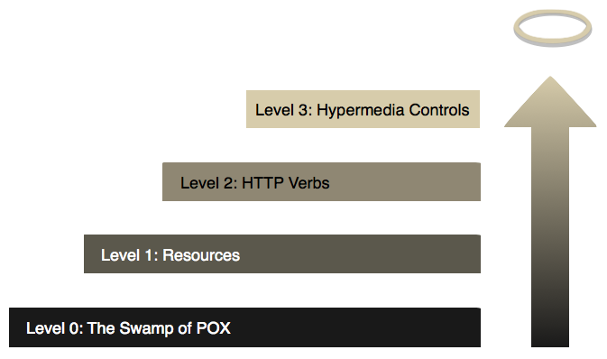

GraphQl/Falcor:
Why Killing REST?
Maxence POUTORD
About me
GET /speaker/maxpou HTTP/1.1
{
"name": "Maxence POUTORD",
"skills": ["Symfony", "API", "NodeJS", "Software quality"],
"hobbies": ["motorbike", "cinema (Danish)", "cooking"],
"job": {
"job": "web consultant",
"company": "Conserto"
},
"_links": {
"self": { "href": "maxpou.fr/slides/slides/graphql-falcor-why-killing-rest/" },
"blog": { "href": "maxpou.fr" },
"Twitter": { "href": "twitter.com/_maxpou" },
"mail": { "href": "maxence.poutord@gmail.com" }
}
}
Disclaimer
I will NOT speak about WHAT, only about WHY
RPC Style
RPC
- GET /films?view=catalog&mode=premium
- GET /films?action=watch&titleId=101
- GET /favourites?action=delete&titleId=42&view=detailMovie
GET/POST whatever...
RPC
- Low latency
- Small Messages
- Tight coupling
- Manual Cache Management
Pros:
Cons:
Better Call REST!
REST Style
Richardson Maturity Model
Levels 0, 1 and 2
- Resource unicity
- Client use HTTP verbs
- Server use HTTP codes
- Content negotiation
Use media types to describe WHAT is expect
Level 3: HATEOAS
- Hypertext As The Engine Of The Application State
- Resources are self-describing (discoverability)
Use links to describe HOW the service is used - Hypermedia formats (e.g., HAL, JSON-LD, HYDRA)
Example: HATEOAS (HAL+XML)
The Hunt
2012
Requests
The Hunt
2012
Mads Mikkelsen
Thomas Bo Larsen
- GET films/12345
-
- GET actors/42
- GET actors/51
3 request to satisfy datas needed by view!
REST
- cache consistency
(idempotent/safe HTTP method) - loose coupling
- Heavier response
- No "multi-GET"
- Clients need to understand what links are about
- ...nobody understand REST!
Pros:
Cons:
Autopsy:
How/Why moving away from REST?
By
Falcor approach
“One Model Everywhere”
# Request
GET /model.json?paths=["film.name", "film.year", "film.actor.name"]
# Response
{
user: {
name: "The Hunt",
year: 2012,
actor: [
{
"name": "Mads Mikkelsen"
},
{
"name": "Thomas Bo Larsen"
}
]
}
}
By

GraphQl approach
GET /graphql?query=
{
film(id: "12345") {
name,
year,
actor: {
name
}
}
}
{
"data": {
"film": {
"name": "The Hunt",
"year": "2012",
"actor": [
{
"name": "Mads Mikkelsen"
},
{
"name": "Thomas Bo Larsen"
}
]
}
}
}
RPC/REST convergence
=> new APIs
| REST | Falcor | GraphQL | |
| Learning curve | ~ | ||
| "Multi-GET" | |||
| Message size | |||
| Cache management | |||
| Languages | |||
| Introspection | |||
| Possibility | |||
| Community |
Thank you
Questions?
Credits/Further reading
Events in Nantes
- "Kill all the REST with falcor" by Hugo WOOD - 12/04/2016 @NantesJUG (tonight, sorry!)
- "GraphQL spécifier, utiliser et exploiter" by Cédric GILLET & Axel CATELAND - 19/04/2016 @GDGNantes